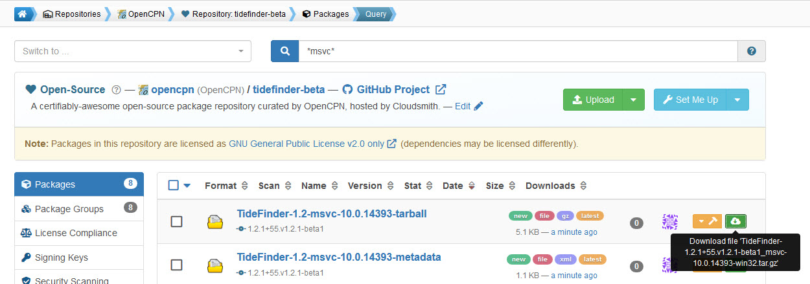

CI Final checks and testing
Final checks
Have the environment variables been entered for CircleCI and possible other builders?
Has a deploy key (with write permissions) been added to your OpenCPN/plugins fork repo?
Are the Cloudsmith repos ready to receive your builds?
Is the OpenCPN/plugins for ready to accept pushed metadata from the builders?
Building the plugin
The builds start with pushing a change to the TideFinder repository.
When the changes have been made to the plugin it is a good idea to make an untagged build. The builds will arrive in the Cloudsmith opencpn/tidefinder-alpha repository. The plugin can be tested for functionality by using the Import plugin… button in OpenCPN.
Now a tagged beta build can be made. The tag name needs to include the word `beta'. For example `v1.2.5-beta' This build pushes the plugin tarballs and metadata xml files to Cloudsmith opencpn/tidefinder-beta. At the same time the metadata files are pushed to the auto branch of your GitHub OpenCPN/plugins fork repo.

The beta build can be tested in the same way as the experimental untagged version. Use the Import plugin… button in OpenCPN.
When you want the plugin to be added to the master catalog another tagged build is made. The tag name must not contain `beta'. For example `v1.2.5'. The source code for tagged builds, either beta or production ends up in GitHub TideFinder repo tag pages. The reason for using untagged builds initially is to avoid cluttering up this part of your GitHub repo. Unwanted tags can be removed using this technique
Check the metadata push
Check that the builders pushes metadata to the OpenCPN/plugins fork
$ cd plugins $ git remote update origin $ git fetch origin auto:auto $ git log --oneline auto~10..auto
This lists the 10 last commit to the auto branch. You should see something like
75c771bf 1a21bbc: raspbian-armhf: refactor-2 b1afafc5 1a21bbc: raspbian-armhf: refactor-2 d94cbb81 1a21bbc: mingw-x86_64: refactor-2 8b35bdc6 1a21bbc: ubuntu-x86_64: refactor-2 77ba0dbf 1a21bbc: debian-x86_64: refactor-2
Don’t care that much about the commit messages. The important thing is that the builders actually have pushed commits to the auto branch.